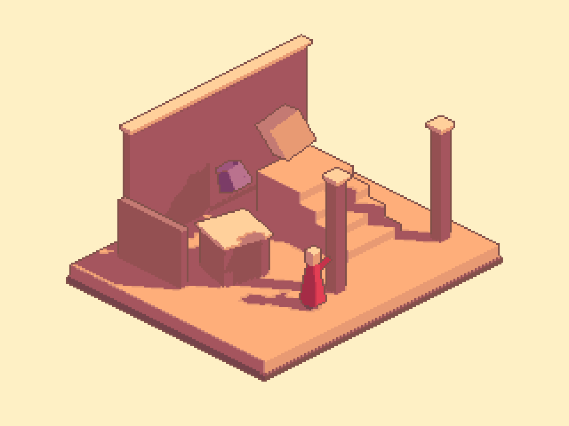

Tracefolio REPORTS & ISSUES
Tracefolio REPORTS & ISSUESPixel Camera — 짙은 외곽선과 광원 반응 내부 모서리 분리
검증 대기깊이 경계의 짙은 1픽셀 선을 유지하면서 내부 면 모서리에 실제 인접 면의 명암색과 방향 광원을 반영했습니다. 새 아틀리에 예제와 9언어 문서를 갱신하고 실제 Unity 렌더로 검증했습니다.
작업 결과
구현과 비화면 검증을 완료했습니다. 실제 마우스·키보드/Inspector 확인은 사용자 요청으로 보류했습니다.
변경 내용
적용 내용
Full Camera에 Separate inner edges와 Inner edge strength를 추가했습니다. 기본값은 꺼짐으로 기존 설정을 유지하며 새 아틀리에 프리셋은 켬·강도 0.85를 사용합니다. 깊이 불연속은 기존 어두운 선색을 유지하고 노멀 모서리는 더 밝은 인접 면의 실제 명암색을 방향 광원에 따라 혼합합니다. 고정된 흰색을 더하지 않으며 혼합 뒤 팔레트를 적용합니다.


같은 Unity 장면·카메라·960×720·3배 픽셀 격자에서 해당 옵션만 전환한 실제 렌더입니다. 기존 예제 재배치가 아닌 04-IsometricAtelier의 전용 형상·프리팹·프리셋에 반영했습니다. 현재 작업은 재질 발광·광원·그림자 설정을 임의 색상 상수로 교체하지 않았습니다.
검증
- 실제 Unity 6000.0.83f1 Linear/Built-in GPU 검사 22개와 카메라 회귀 12개 통과.
- 단순 겹침 큐브: 깊이 경계 3,402픽셀 유지·변경 0개, 내부 모서리 522픽셀이 선 없는 기준 면보다 밝아짐. 방향 광원을 끄면 내부선 추가 차이 0개.
- 기존 양쪽 선 6/6출력px → 한쪽 선 3/3출력px: 3배 확대에서 원본 1px. Silhouette 모드도 3/3px.
- 새 예제 팔레트 밖 픽셀 0개·3×3격자 불일치 0개·저장 후 재열기 픽셀 동일. Garden 원본 518개 오브젝트 보존.
- 7개 어셈블리 컴파일 성공, UI 옵션 9언어와 생성 문서 27개의 본문·장 이동·이미지/링크 검사 통과.
- 원래 활성 씬·더티·선택·루트 보존, 작업 preview 종료. 새 GUI 프로세스 실행 및 마우스/키보드 조작 없음.
- GPU 근거 · 문서 검증 · 컴파일
- 교훈 검토: 기존 참고 대조·실제 픽셀/광원 반응 검증 규칙을 적용했으며 새 전역 지침은 추가하지 않았습니다.
남은 사항
깊이·노멀 기반 검출이며 오브젝트 ID 분리가 아닙니다. 동일 평면·접촉 경계는 임계값 조정이 필요할 수 있습니다. 내부선의 광원 기준은 방향광입니다. 실제 URP 렌더와 네이티브 입력/Inspector 테마·9언어 레이아웃·브라우저 탭 표시는 미검증입니다. 참고 원본의 실제 구현 방식은 미확인입니다. 사용자 화면 보류에 따라 해당 GUI QA를 통과 처리하지 않았습니다.
작업 시간
- 제안 시간: 15~25분
- 실제로 완료된 시간: 시작 2026-11-05 20:37:05 KST. 구현·비화면 검증 종료 2026-11-05 20:54:35 KST (1050초). 공개 배포 확인은 이후 별도 수행하며 최종 채팅에 전체 소요 시간을 기록합니다.
- XERJ: 미사용 — Status에서 노드 미실행 확인. PixelCamera는 기존 인덱스 범위 밖으로 현재 소스를 직접 확인하고 rg를 사용했습니다.